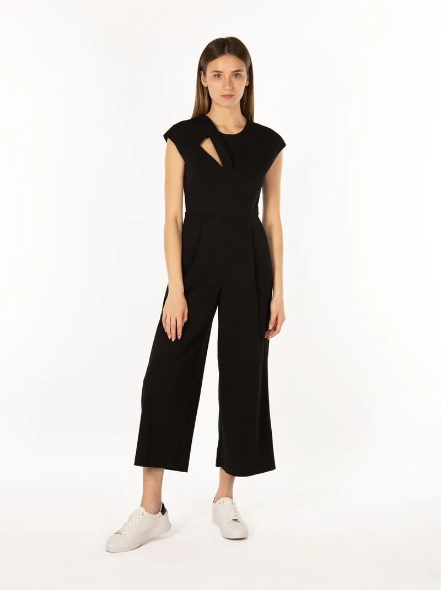
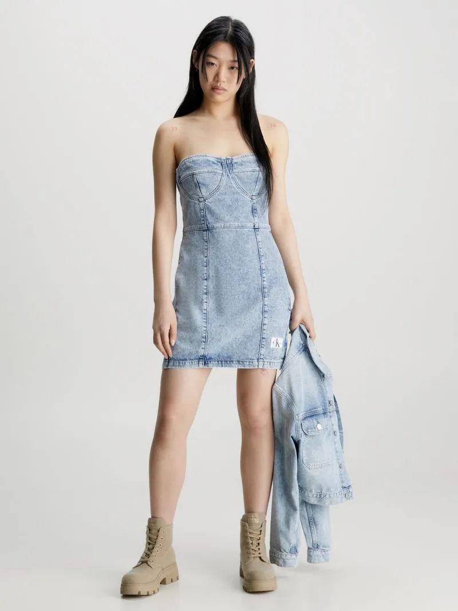
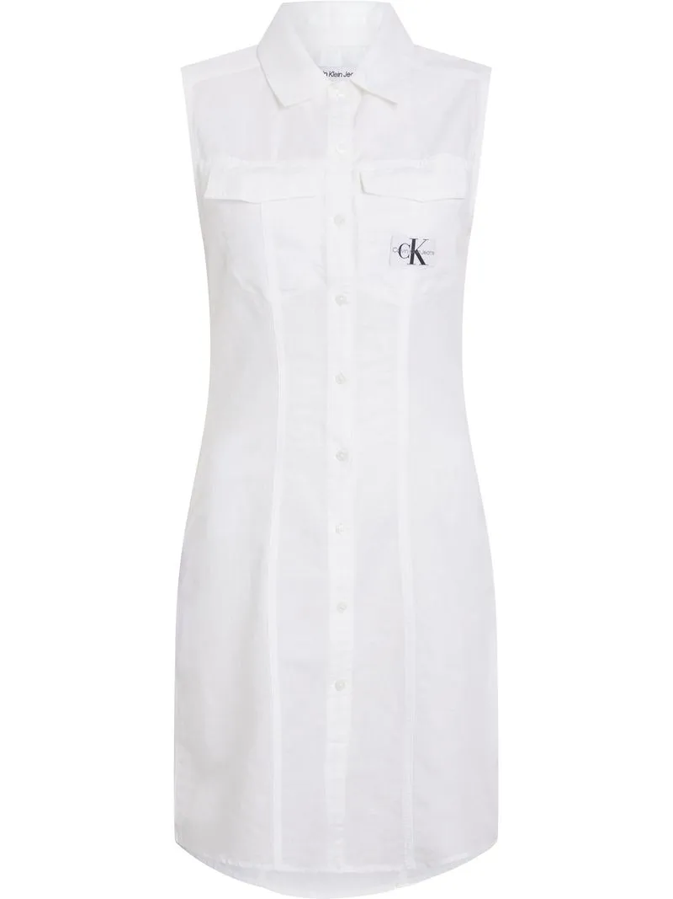
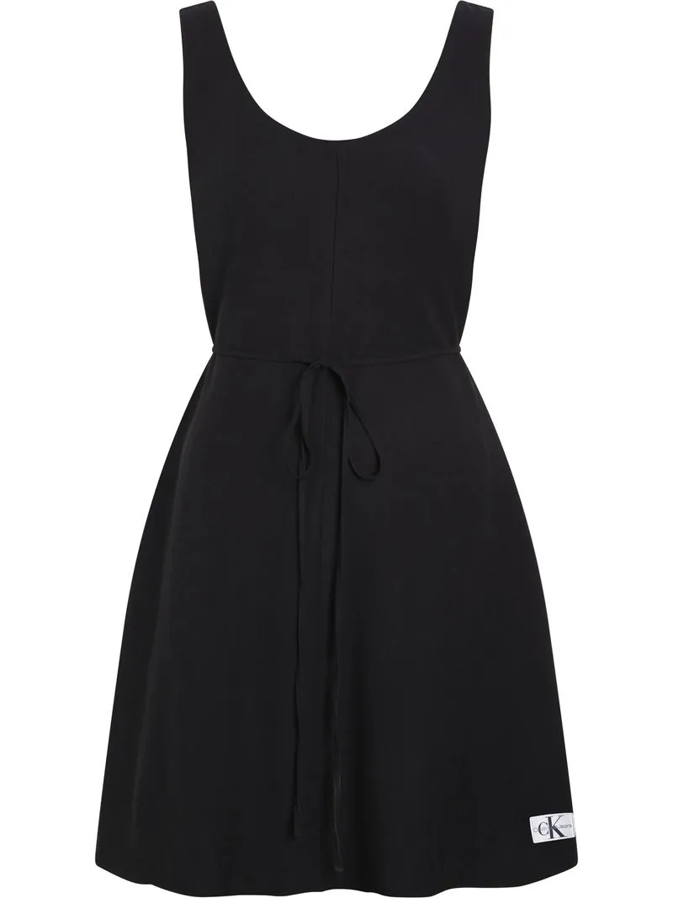

|

Q1,200.00Descripción del producto Vestido enterizo con abertura |

Q1,200.00Descripción del producto Vestido corsé denim reciclado |
|

Q800.00Descripción del producto Vestido sin mangas de algodón y lino |

Q400.00Descripción del producto Vestido atado a la cintura de sarga suave |